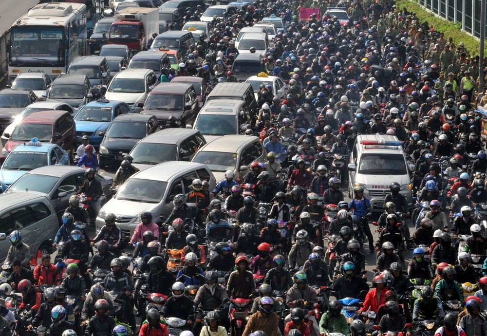
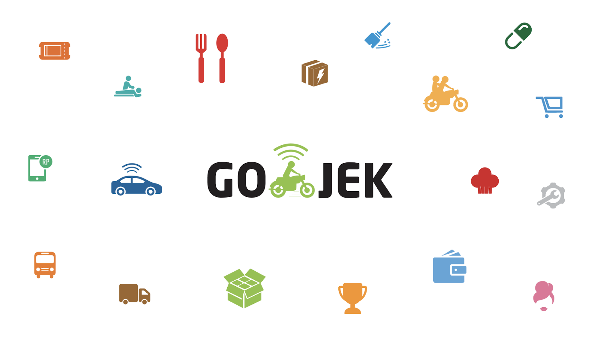

Go-Jek is Indonesia’s first “decacorn”, or technology startup valued at more than $10B as of 2019. The company began its journey in 2010 as a ride-hailing application with 20 drivers utilizing a regional resource, the abundance of motorcycles in Indonesia, as its value proposition. The Go-Jek application was released in 2015, and grew to 30 million downloads in the span of two years, with over a million drivers in its fleet currently. Think Uber’s a tech-superpower? Go-Jek now is what is known as a “Super App”, offering over 20 services including an e-wallet service, a food delivery service, a masseuse requester service, a fuel delivery service, and many others you wouldn’t even consider. And although the company has faced criticism in the past for forcing out conventional forms of transportation such as the “ojeks” (motorcycle taxis) it derives its name from, it’s clear that the Indonesian people have embraced the company. In 2017, when the Minister of Transportation banned the company from operating its ride-sharing services, this instantiated uproar from the Indonesian people, who created a hashtag #SaveGojek, leading to the ban being lifted the very next day. All of this is to say that Go-Jek is not only a high-growth technology company. Go-Jek has become an important, inseparable element of the Indonesian way of life. In 2017, Go-Jek was listed on the Fortune list of Companies that Changed the World – the only Southeast Asian company to do so.
With introductions aside, I will analyze the company on various features discussed on in Harvard Business School’s Disruptive Strategy online course, as well as within one of my favorite books, Professor Clayton Christensen's The Innovator's . Most prominently, I would like to characterize the disruptive elements of Go-Jek’s product offerings, how the company has targeted its “customer jobs to be done” matrix, and how we can decompose each of experience, integration, and brand that allow Go-Jek to fulfill the customer’s need in the best possible way. On the other side, I will analyze Go-Jek’s structure and high-level strategy as a pseudo-product conglomerate, and how interdependence affects its operations and whether or not we should worry about this. Looking externally, I will analyze Indonesia’s technology space, and how Go-Jek should adapt as the consumer tech-service space becomes more modularized, and as expansion and growth of Go-Jek services to various countries around the Asia region and even the world becomes key (as of now, Go-Jek has expanded to Indonesia, Vietnam, Thailand, and Singapore). As Professor Clayton Christensen mentions, the strategy that leads to a company’s success is not the “right strategy”. Strategy should be constantly and vigorously reevaluated, especially talking about the rapidly revolutionizing technology space within Southeast Asia.
First, how did Go-Jek become so popular in the first place? Why did it grow to a “Super App”? What did Go-Jek offer that was missing in Indonesian service offerings in the past? In developing countries within Southeast Asia, motorcycles are often a cheaper commodity than cars – especially since the cost of cars due to exports often raises the price of cars to consumers three to five times. If you Google “Jakarta traffic”, you’ll see exactly how the flurry of motorcycles traverse the Jakarta roads. This often leads to terrible traffic congestion that can make as short as a 10-kilometer (or 6 mile) ride take up to an hour. However, while motorcycles are a large part of the problem of traffic, they also often are able to bypass it – weaving in and out of the gaps of vehicles. The founder of Go-Jek, Nadiem Makarim, a frequent motorcycle taxi user, saw this as an opportunity within the Indonesian market.
What was the “job to be done” targeted by Go-Jek? When it initially was founded, it was to get customers from point A to point B in the fastest possible way. Indonesia is growingly rapidly as an international business hub, and traffic annually costs Jakarta 65 trillion rupiah (US $4.6B) per year. For the individual, the “cost” is lost time with family, frustration, and being late for meetings, among other things. And on the other hand, the business model that was created not only positively affects its consumers, but the company’s workers: its fleet of drivers. According to James Guild, a writer from TechInAsia, Go-Jek drivers make roughly 5-7 million rupiah per month ($350-$500 USD), with most minimum-wage positions making an average of 3.5 million rupiah ($250 USD). Thus, Go-Jek has catalyzed not only a way to truly address customer’s needs, but also gain a metaphorical archipelago of workers who are trying to be able to sustain life – considering Jakarta’s poverty rate is roughly 10%.
Go-Jek is a stellar case of tackling a customer’s job to be done within the context of a national scale. It took advantage of the preexisting scale of motorcycles within the nation, and targeted a predominantly low to mid-income region. And not only has its ride-sharing capabilities grown, but all other products under the Go-Jek umbrella have benefited from a powerful regional expertise.
However, looking forward, Go-Jek must consider two things: (1) consumer-based technology services are still a relatively new market within the Southeast Asian region. As the market modularizes, and these services become more widespread among a variety of different company offerings – Go-Jek will need to reevaluate its growth and its range of services. For instance, Go-Clean is Go-Jek’s professional housecleaning service. If a rival company is able to negotiate deals among various housecleaning businesses more efficiently and targets a customer segment in a more focused way specifically within housecleaning, Go-Jek runs the risk of not being able to respond. Its scale may lead to its decline, if not properly addressed. Teams segmented by product, which is how Go-Jek is currently operating, is currently a viable option, but may not always be. Of course, currently, Go-Jek being the first-to-market in Indonesia with the Super App idea targeting many services that never would have been able to be brought to customers so easily has made them the foundational service. However, this could definitely change, and Go-Jek needs to keep this in mind going forward.
In terms of international expansion which considering Indonesia’s success, could allow Go-Jek to catalyze impact throughout Southeast Asia and beyond, there’s still some difficulties that need to be addressed. Go-Jek currently only offers its diverse array of services in Indonesia, but has expanded to Vietnam, Thailand, and Singapore – albeit only offering its ride-hailing service as well as its food service (currently figuring out how to implement this in Singapore). However, the fact that it only offers these services deters its compounding service ability as a “Super App”. As founder Nadiem Makarim says, “"Go-Jek is not a ride-hailing, food delivery service or payment company. We are a combination of (these services) and all other services that we offer”. Thus, Go-Jek’s future relies on its ability to expand to these services effectively in diverse countries with diverse customer needs. This is also not to mention the governmental loopholes that Go-Jek will need to traverse (for instance, in Singapore, when similar Super App company Grab was expanding, their relations with the government allowed to gain favor and grow effectively). There’s definitely potential to grow, but if not resolved, expansion could also result in tremendous cost for the company.
Holistically, though, Go-Jek truly has been a trailblazer within the technology space in Southeast Asia, and has already shown its potential to empower an entire nation in Indonesia, not only with its customers, but in the lives of their drivers, and the micro-businesses that are connected with their services. As McKinsey mentions in their recent report, the future of Asia is now, and companies like Go-Jek are allowing the globe to finally acknowledge Asia’s potential.